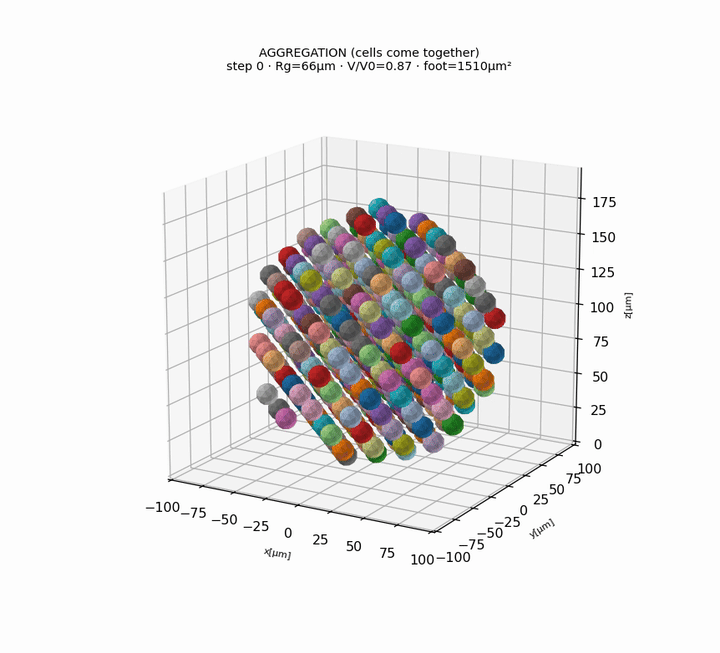
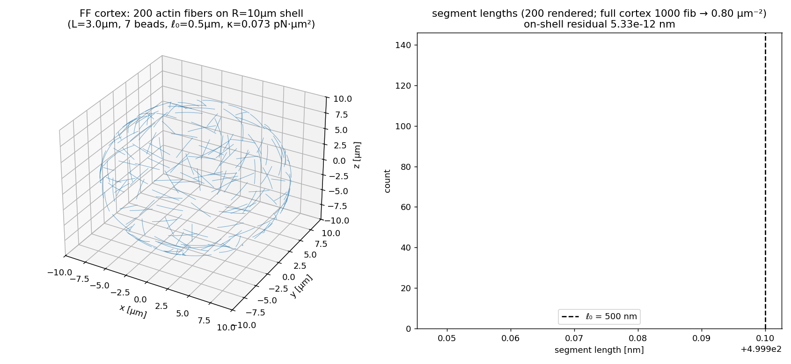
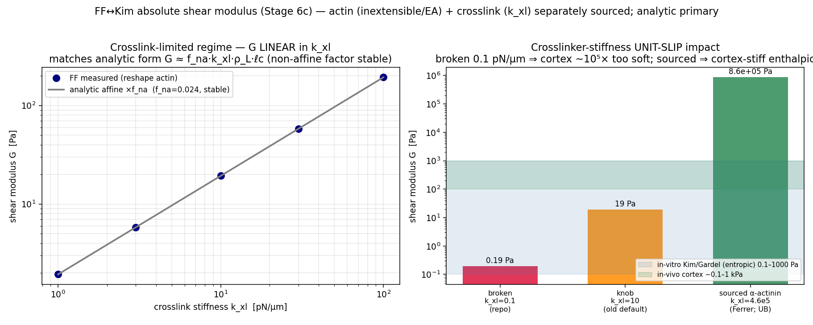

ffn_cellsim
A fine-grained, mechanistic simulator of single-cell mechanobiology — every filament, motor, adhesion, and cross-link is an explicit particle, not a lumped model.

Emergent aggregation — 400 deformable cells self-assembling into a cohesive spheroid via explicit cadherin catch-bonds.핵심 · Interactive 3D morphology — rotate, cut, explore
The heart of the project: real Three.js / Plotly cell-morphology viewers. Drag to rotate, scroll to zoom. Every cell is an explicit deformable body, not a sphere.
FF engine morphology
Cytosim physics on NVIDIA Warp: individual actin filaments, myosin motors and cross-linkers woven into cortex and protrusions.


Quantitative validation
Supplementary charts — the numbers behind the morphology, cross-checked against published oracles. Shown honestly, including where the model is short of a target.

